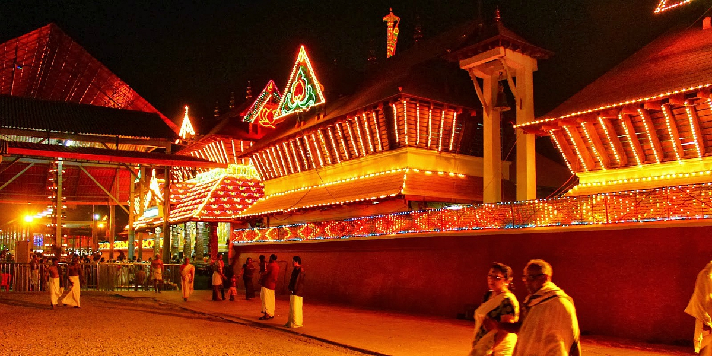
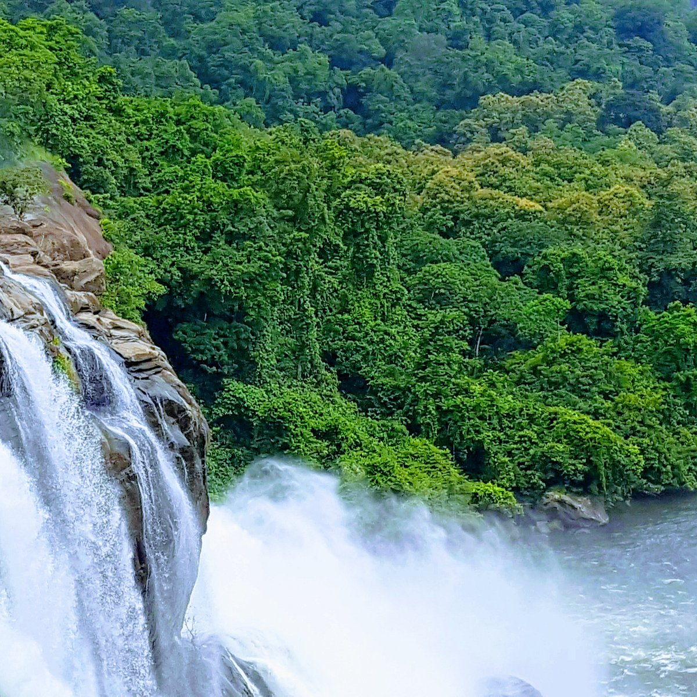
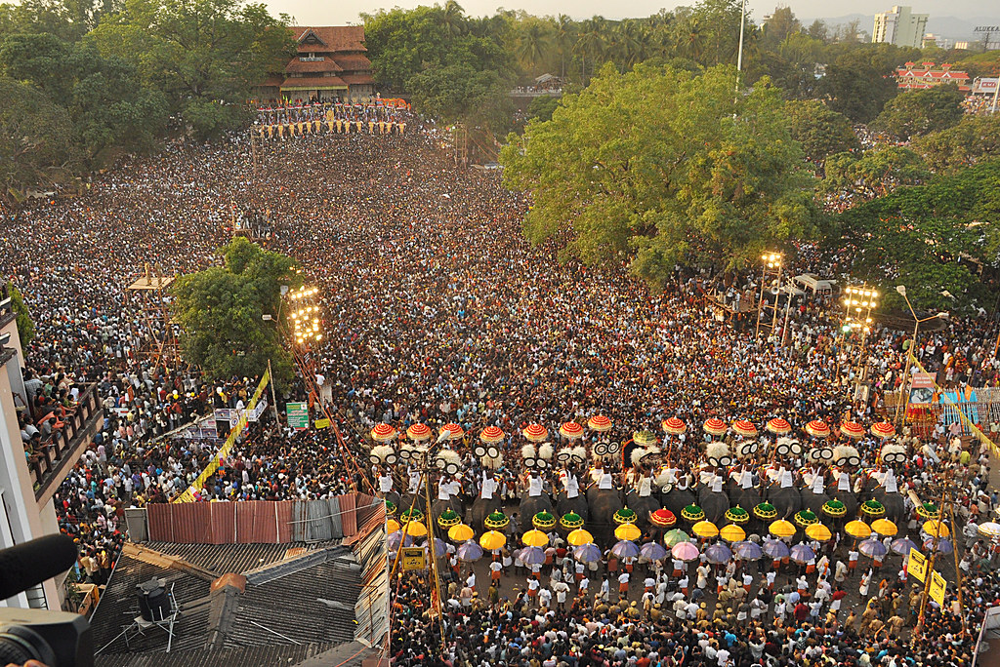

More Places





Thrissur , formerly Trichur, also known by its historical
name Thrissivaperur, is a city and the headquarters of the Thrissur district
in Kerala, India. It is the third largest urban agglomeration in Kerala after
Kochi and Kozhikode, and the 21st largest in India. The city is built
around a 65-acre (26 ha) hillock called the Thekkinkaadu Maidaanam which
seats a large Hindu Shiva Temple. It is located central of the state,
and 304 kilometres (189 mi) north-west of the state's capital city,
Thiruvananthapuram. Thrissur was once the capital of the Kingdom of
Cochin, and was a point of contact for the Assyrians, Greeks, Persians,
Arabs, Romans, Portuguese, Dutch and English.
Thrissur is also known as the Cultural Capital of Kerala because
of its cultural, spiritual and religious leanings throughout history.
The city centre contains the Kerala Sangeetha Nadaka Academy, Kerala
Lalithakala Akademi and Kerala Sahitya Academy. The city hosts the
Thrissur Pooram festival, the most colourful and spectacular temple
festival in Kerala. The festival is held at the Thekkinkadu Maidan
in April or May, in the Malayalam month 'medam'.
Religion is important and varied in Thrissur. The city has historically been a
centre of Hindu scholarship, and Christianity, Islam and Judaism are believed
to have entered the Indian subcontinent through Thrissur and its surrounding areas.
Officially known as the cultural capital of Kerala,
Thrissur is famous for fostering classical Keralan performing arts,
religious sites and the renowned Thrissur Pooram festival, Onam
festival and Vadakkumnathan Temple. Thrissur is the short form
of Thiru-Shiva-Per-Ur which literally means “a city with three
temples of Lord Shiva”. Thrissur later became anglicised to Trichur.
Thrissur is from where Kerala gets a fair share of its festive glitter.
Thrissur was the capital of the Kingdom of Kochi. The festivals celebrated
here are the major attraction for tourists and a visit to Thrissur is
incomplete without witnessing these. Other tourist spots in Thrissur
include the Vadakkumnathan Kshetram Temple, Tomb of Shakthan Thampuran,
Archaeology Museum, Athirapally Falls, Heritage Garden and many more.
Athirapally Waterfalls are located 1000 feet above sea level at the Chalakudy
River in Thrissur district of Kerala. One of the famous tourist attractions.
in Kerala, the magnificent waterfalls are a sight worth witnessing. This
is the biggest waterfall in Kerala. Athirapally falls comes down from
a height of 80 feet through several parallel streams. In the monsoon
season, in its full might, the waterfalls appear like Niagara Falls.
One can reach the top of Athirapally falls in about 15 minutes' wall.
It is blessed with spectacular views of the Sholayar hills and the Western Ghats.
The trek down from the top of the waterfalls is about 10-15 minutes trek.
Swimming is possible in the stream as you enjoy the spray of the water.
Rainbows are also a common sight. It usually takes 2-3 hours to explore
the waterfalls.
The surrounding environs of the waterfalls is a bio diversity hotspot. The river
is blessed with 85 species of fresh water fish living in it. The forest is
habitat of different species like the Indian grey hornbill, Malabar pied
and grey hornbill, lion-tailed macaque, Asiatic elephant, tiger, leopard,
bison, sambar, etc. The Vazhachal Waterfalls, Charpa Falls, Anakkayam,
Sholayar Dam, Valparai and Malayattur Wildlife Sanctuary near Athirappilly
are worth exploring. There are adventure activities like river rafting,
trekking, etc.
Vadakkunnathan Temple, or Vadakkumnathan Temple, in Thrissur is one of the most
popular temples in Kerala. It is believed to be the first Shiva temple built
by Lord Parasurama who is the sixth incarnation of Lord Vishnu. This temple
is however one of the UNESCO recognised heritage sites. The temple is also
known as Thenkailasam or Vrishabhachalam.The temple is built in typical
Kerala style architecture, located on a hillock in the heart of Thrissur
city. Standing tall in the centre of 9 acres of land, the temple doesn't
fail to grab attention of the passers-by. There are 4 gateways called
gopurams to the temple facing East, West, North and South respectively.
The temple is known for the rare murals portrayed here that include scenes
from Mahabharatha, of which Vasukishayana and Nrithanatha are worshipped
daily. Apart from these murals, the temple also houses a museum that
showcases ancient paintings, woodcarving and other works of art of
ancient times.The Koothambalam of the temple, or the temple theatre,
is rich in its display of wooden carved vignettes. Koothambalam is
used for staging ritualistic art forms of Central Kerala like Koothu,
Koodiyattam and Nangyar Koothu. The three main shrines in this temple
are of Sri Vadakkunnathan (Lord Shiva), Lord Shankaranarayana and Lord
Rama. Goddess Parvati is also worshipped here. One for the strange aspects
of the temple is that the ghee offered here for centuries doesn't melt,
even in scorching summers. It is also believed that if the ghee covering
the linga melts, that would lead to a massive disaster.
Guruvayur Temple is an important and popular pilgrimage in Kerala. Located
in Guruvayur town of Thrissur district, Guruvayur Temple is easily accessible
by regular bus services that are available throughout the state of Kerala.
The nearest airport is sited as Kochi that lies at a distance of 90 kms
from Guruvayoor. Thrissur comprises the nearest railway station at a run
of 29 kms from the temple. Guruvayur Temple is supposed to have been
5,000 years old. In those times, it was known as "Bhooloka Vaikunta"
(Abode of God on Earth). The term 'Guruvayur' is said to have been derived
from two words, 'Guru' (preceptor of the gods) and 'Vayu' (god of winds).
The temple is dedicated to Lord Krishna, who is also known by the name
of Guruvayoorappan. Due to its reverence, Guruvayur Temple is also known as
'Dakshina Dwaraka' (Southern Dwarka).
The presiding deity is Lord Krishna is the form of Maha Vishnu (Lord Krishna
is an incarnation of Lord Vishnu). The image is depicted in a standing posture,
which has four hands holding Shankh (conch), Sudarshana Chakra (a serrated disk),
Lotus and Mace. The image is worshipped as Balakrishna, an incarnation of Lord
Vishnu. It is carved out of a rare stone named Patala Anjana. The walls of the
main shrine are festooned with beautiful mural paintings and intricate carvings.